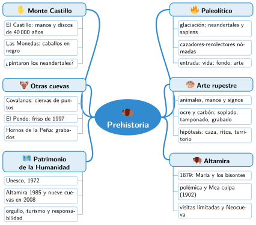

Bloque II · Cantabria, patrimonio cultural
UD05 La Prehistoria en Cantabria
Sesiones
- Sesión 5.1 Las cuevas prehistóricas
- Sesión 5.2 El arte rupestre paleolítico
- Sesión 5.3 Altamira
- Sesión 5.4 El Castillo y Las Monedas
- Sesión 5.5 Covalanas, El Pendo y Hornos de la Peña
- Sesión 5.6 Qué es el Patrimonio de la Humanidad
Al terminar la unidad
Mapa mental de la unidad

✏️ Repasa la unidad con el mapa: tapa una rama y explica en voz alta lo que pone.